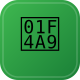

also known as Shiternetes · a project of the SNCF
The world's first Spreadsheet-Native Orchestration Platform. A container orchestrator whose control plane is a Google Sheet. No clusters, no etcd, no YAML.
For ten years the industry told you that running three containers required a
distributed consensus database, sixty-three resource types, a babysitter for etcd,
and a platform team with its own budget line. Sheeternetes disagrees. It
relocates the entire control plane to the substrate humanity already trusts with its most
critical data — the spreadsheet. One tab. Infinite power. Zero YAML (we use JSON, which is
merely YAML that has compiled).
And it is not a mockup: real Docker containers, on real hosts, scheduled, self-healed, and rolling-updated by a production control loop that lives, serenely, inside a Google Sheet.
Apps Script is the API server, scheduler, and reconcile loop. The Google Sheet (tabs:
Deployments, Nodes, Pods, Events) is etcd. kubelet.sh on your Docker hosts is the
kubelet; skctl is your kubectl. Nodes heartbeat the API server, the scheduler
bin-packs by CPU and memory, and the loop keeps desired state and reality in agreement.
Networking comes from Sheetlium; GitOps delivery from Sheetlux CD.
Heartbeat scheduling, self-healing on node loss, restart-on-crash, rolling updates with maxUnavailable=1.
Workloads are rows; state is cells. Indentation-related outages: eliminated.
Your dashboard is the Deployments tab. Conditional formatting is your alerting stack.
The most cost-optimized orchestrator in the industry, because the industry forgot to check whether a spreadsheet counts.
| Sheeternetes 💩 | Kubernetes | HashiCorp Nomad | Docker Swarm | Cloud Foundry | |
|---|---|---|---|---|---|
| Control plane | A Google Sheet | etcd + API server + controllers + scheduler | Raft + server nodes | Raft-backed managers | BOSH + Diego |
| Lines of YAML for hello-world | 0 (we use JSON) | ~40 | ~15 (HCL) | ~12 | a manifest and a prayer |
| Consensus DB required | No — it's a Sheet | Yes (etcd) | Yes (Raft) | Yes (Raft) | Yes |
| Editable by your CFO | Yes | No | No | No | Absolutely not |
| Learning curve | One afternoon | One career | One week | One weekend | One reorg |
| Spreadsheet-native | ✅ Only us | ❌ | ❌ | ❌ | ❌ |
| Control-plane cost | $0 | $$$ | $$ | $ | $$$ |
| Time travel (undo) | Ctrl+Z | No | No | No | No |
| Safe for production at scale | Please don't | Yes | Yes | Yes | Yes |